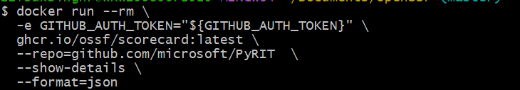

Open source is now part of nearly every modern software system. In AI systems, the dependency surface is even broader: agent frameworks, model-serving libraries, vector database clients, data connectors, browser automation tools, MCP servers, evaluation frameworks, CI/CD workflows, and package managers all become part of the trust boundary.
That makes open source security posture a serious enterprise risk. OpenSSF Scorecard helps by giving security and engineering teams an automated way to evaluate visible security practices in open source projects.
The important word is visible. Scorecard does not prove that a project is safe. It gives a first-line signal about whether the project appears to follow healthy security habits.
What Scorecard Actually Tells You
OpenSSF Scorecard checks repositories across areas such as maintenance, code review, branch protection, pinned dependencies, known vulnerabilities, CI testing, release signing, security policies, dangerous GitHub Actions patterns, token permissions, SAST, and fuzzing.
The aggregate score is useful, but it should never become the final verdict. A project with a high score may still have a serious issue. A project with a lower score may simply be missing metadata or using workflows that are difficult for automated tooling to inspect.
The real value is in the individual checks.
Use Scorecard as decision support, not as blind approval.
For example, a failed Dangerous-Workflow or Token-Permissions check may matter much more than a small drop in the total score. Security teams should review the checks that map directly to supply chain compromise paths.
Reading A Real Scorecard Output
A sample Scorecard run evaluated github.com/microsoft/PyRIT at commit 39f892db5acc32f8b5d2c3b8a9bbe8fdfc04104c using Scorecard v5.5.0. The overall score was 7.7.
At first glance, 7.7 looks healthy. But this is exactly why the aggregate number should not be used alone. The individual checks tell a more useful story.
| Signal | Scorecard result | How to interpret it |
|---|---|---|
| Strong project hygiene | Binary-Artifacts, CI-Tests, Code-Review, Contributors, Dangerous-Workflow, Dependency-Update-Tool, License, Maintained, Packaging, and Security-Policy scored 10. |
The project shows many good visible security practices: reviewed changes, CI coverage, active maintenance, a license, a security policy, Dependabot, and no dangerous GitHub Actions patterns detected. |
| Branch protection gap | Branch-Protection scored 5. |
The main branch is protected, but not maximally. The output notes gaps such as admin enforcement not enabled, stale review dismissal disabled, only one required approving review, no required Code Owners review, and last-push approval disabled. |
| Build dependency pinning risk | Pinned-Dependencies scored 0. |
This is the biggest supply chain concern in the output. Multiple GitHub Actions, container images, download-and-run steps, and package install commands are not pinned by hash. For CI/CD, build, or AI toolchain use, this deserves review before approval. |
| Analysis coverage gaps | SAST scored 0 and Fuzzing scored 0. |
Scorecard did not detect static analysis on all commits or fuzzer integrations. That does not prove the code is vulnerable, but it means those assurance signals were missing from the visible repository posture. |
| Workflow token permissions | Token-Permissions scored 8. |
Most permissions appear constrained, but the output still found excessive permissions and missing top-level permission declarations in some workflows. This matters because workflow tokens can become an attack path after a CI compromise. |
| Incomplete checks | CII-Best-Practices and Vulnerabilities returned internal errors. Signed-Releases returned no releases found. |
The run ended with an error because some external checks failed due to certificate verification problems. Treat those as unknowns, not as passes. Re-run from a clean network environment or validate vulnerabilities with SCA tooling before making a production decision. |
My reading of this output would be: the project has strong community and repository hygiene, but it should not receive blind approval for production, CI/CD, or agentic AI use based only on the 7.7 score. The review should focus on unpinned build dependencies, branch protection hardening, SAST coverage, fuzzing coverage, token permissions, and a separate vulnerability scan because the vulnerability check did not complete.
For a research or lab environment, this may be acceptable with isolation. For a production AI security workflow, I would mark it as approved with review or blocked pending review, depending on how much authority the dependency has over data, credentials, code execution, or deployment.
Where Organizations Should Use It
Scorecard is most valuable during new open source dependency intake. Before a team introduces a new package, GitHub Action, AI framework, model-serving tool, plugin, or SDK, Scorecard can provide a quick security posture review.
It should also be used for ongoing monitoring of critical dependencies. Open source projects change over time. A project that looked healthy six months ago may become unmaintained, introduce risky workflows, stop signing releases, or accumulate unresolved vulnerabilities.
Organizations should also apply Scorecard to their own internal and public repositories. That improves engineering hygiene and helps teams find gaps in branch protection, token permissions, dependency pinning, release practices, and security policy documentation.
For AI security, the strongest use cases are AI supply chain governance and toolchain review. Any open source component that can influence model behavior, access data, execute code, connect to external tools, or participate in deployment should be reviewed before production use.
Risk Tiering For AI And Enterprise Dependencies
A practical policy should classify dependencies by risk before applying enforcement. A formatter and an agent framework should not go through the same process.
| Risk tier | Examples | Scorecard guidance |
|---|---|---|
| Critical | Inference servers, agent frameworks, authentication libraries, sandboxing tools, model execution components, production runtime dependencies | Required |
| High | CI/CD tooling, GitHub Actions, deployment scripts, release automation, data pipelines, infrastructure provisioning tools | Required |
| Medium | Business logic libraries and common application packages | Reviewed |
| Low | Local development tools, test utilities, formatters, and experimental notebook-only packages | Advisory unless promoted into production |
For critical and high-risk dependencies, Scorecard should be required. For medium-risk dependencies, it should be reviewed. For low-risk dependencies, it can be advisory unless the package is promoted into production.
A Practical Internal Policy
A strong internal policy could say:
All new open source dependencies used in production, build systems,
deployment workflows, AI agents, model-serving paths, data pipelines,
or security-sensitive code must be evaluated using OpenSSF Scorecard
before approval.
Approval decisions must prioritize individual high-risk checks, not only
the aggregate score. Exceptions require documented compensating controls,
a named risk owner, and an expiry date.Suggested thresholds:
| Risk tier | Guidance |
|---|---|
| Critical | Score >= 7.5 and no unresolved critical or high-risk failure |
| High | Score >= 6.5 with review of failed checks |
| Medium | Score reviewed and major issues documented |
| Low | Best-effort review |
The checks that deserve the most attention are:
Dangerous-WorkflowToken-PermissionsBranch-ProtectionCode-ReviewMaintainedVulnerabilitiesPinned-DependenciesSigned-ReleasesSecurity-Policy
Implementation Options
There are three practical ways to use Scorecard.
API
The API is useful for fast lookups of public projects:
https://api.scorecard.dev/projects/github.com/OWNER/REPODocker CLI
The Docker CLI is useful for repeatable local runs, CI jobs, and security review automation:
export GITHUB_AUTH_TOKEN="YOUR_GITHUB_TOKEN"
docker run --rm \
-e GITHUB_AUTH_TOKEN="${GITHUB_AUTH_TOKEN}" \
ghcr.io/ossf/scorecard:latest \
--repo=github.com/OWNER/REPO \
--show-details \
--format=jsonYou can also run selected checks:
docker run --rm \
-e GITHUB_AUTH_TOKEN="${GITHUB_AUTH_TOKEN}" \
ghcr.io/ossf/scorecard:latest \
--repo=github.com/OWNER/REPO \
--checks=Dangerous-Workflow,Token-Permissions,Vulnerabilities,Pinned-Dependencies \
--show-details \
--format=jsonGitHub Action
The GitHub Action is best for repositories the organization owns. It can publish results, create code scanning alerts, and make security posture visible to maintainers.
Problems After Implementation
The first challenge is noise. Many projects will have low or partial scores, and not every finding represents real risk. Some checks may be missing because of permission issues, private repository limits, or repository patterns Scorecard cannot fully inspect.
The second problem is aggregate score misuse. Teams may say, "This dependency scored 8.2, so it is safe." That is the wrong interpretation. Scorecard measures visible security practices, not code safety, maintainer intent, malware absence, exploitability, or runtime behavior.
Developer friction is another risk. If Scorecard becomes a hard gate too early, teams may treat it as bureaucracy and try to bypass it. A better rollout is advisory first, then gradually enforce high-confidence checks for high-risk dependencies.
Dependency-to-repository mapping also requires investment. Package names do not always map cleanly to source repositories, especially across npm, PyPI, GitHub Actions, Docker images, forks, and AI tooling.
Ownership matters too. A finding must have a responsible owner. Without ownership, findings become dashboard noise.
Where To Invest Post-Implementation
The first investment should be risk tiering. Not every dependency deserves the same scrutiny.
The second investment should be check-level policy. Instead of gating on the total score, define which checks matter for each dependency tier.
The third investment should be triage playbooks. For example:
- If
Maintainedis low, require an alternative, fork plan, or internal owner. - If
Vulnerabilitiesfails, confirm with SCA and require a remediation plan. - If
Dangerous-Workflowfails, block for CI/CD and build-system dependencies. - If
Pinned-Dependenciesfails, require pinning or compensating controls. - If
Security-Policyis missing, accept only for lower-risk dependencies.
The fourth investment should be an exception process. Every exception should include:
- Dependency name
- Failed checks
- Business justification
- Risk owner
- Compensating controls
- Expiry date
- Review date
The fifth investment should be developer experience. Engineers should receive a simple outcome: approved, approved with review, or blocked pending review. Raw JSON should feed automation and dashboards, not become the developer interface.
Best Enterprise Use Cases
The strongest use cases are:
- New dependency approval
- GitHub Action approval
- Critical dependency monitoring
- Internal repository hardening
- AI toolchain governance
- Vendor and security review support
- Executive reporting
For executive reporting, track trends rather than vanity scores:
- Number of critical dependencies with failed high-risk checks
- Exception age
- Recurring failures
- Unmaintained dependencies
- Risky GitHub Actions
- AI/ML dependency posture
What Scorecard Should Not Replace
OpenSSF Scorecard should sit beside, not replace:
- SCA and dependency vulnerability scanning
- SBOM generation
- License scanning
- Secrets scanning
- Container image scanning
- Provenance and SLSA checks
- Artifact signing
- Malware or package reputation tools
- Manual security review
- Threat modeling
- Model security review
It answers:
Does this project show healthy security practices?
It does not answer:
Is this code safe?
Conclusion
OpenSSF Scorecard is most powerful when used as a practical security signal inside a broader supply chain program. It should sit alongside SCA, SBOMs, license scanning, secrets scanning, container scanning, provenance verification, artifact signing, and manual security review.
For AI security, the rule should be simple: any open source component that can affect data, tools, credentials, model behavior, deployment, or code execution deserves a Scorecard review before production use.
The goal is not to chase a perfect score. The goal is to make better dependency decisions, reduce preventable supply chain risk, and create clear ownership for open source security.